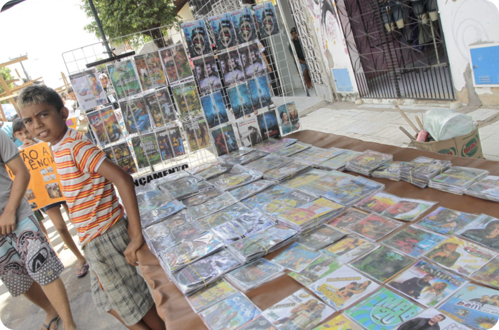
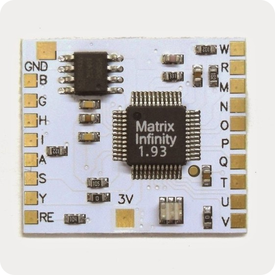

Console mais pirateado de todos os tempos
Em 2002, o PlayStation 2 tinha apenas dois anos no mercado, mas já dava sinais claros de que repetiria a história de sucesso de seu antecessor. O que a Sony talvez não esperasse, era a velocidade com que os hackers começariam a produzir os chips de desbloqueio de seu novo console. No Brasil, é quase impossível não lembrar do PlayStation 2 sem associá-lo diretamente à pirataria.
Os preços baixíssimos dos DVDs colaboraram para que o console estourasse em vendas no país e no mundo, marcando a última geração em que o mercado alternativo de jogos teria grande influência na indústria.
Matrix infinity:
O chip de desbloqueio mais conhecido no brasil
Ainda em fase de testes, a novidade dispensaria o uso de chips internos, como Matrix, que foram sucesso absoluto no Brasil e no mundo. Bastava realizar algumas alterações no software para que os jogos funcionacem normalmente, sem qualquer alteração física.
Vale lembrar que, apesar de ser obsoleto e não receber mais qualquer tipo de suporte da Sony, o console ainda é amplamente utilizado. No Brasil, por exemplo, o PS2 é a terceira plataforma mais utilizada pelos jogadores.
No Brasil o chip Matrix Infinity é disparado o mais vendido quando o assunto é desbloqueio de Playstation 2, consequentemente a maior parte dos Playstation 2 que foram vendidos aqui no Brasil veio com este chip, não é o melhor chip que existe, mas está com certeza entre os melhores.